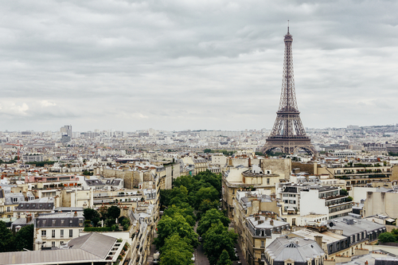

PARIS
Paris is the capital and most populous city of France. It is the largest city in the European Union. Paris is also a major rail, highway, and air-transport hub served by international airports. Paris is often referred to as "The City of Light" because of its leading role during the Age of Enlightenment and becuse it was one of the first European cities to adopt gas street lightening. By the end of the 12th century, Paris had become the politcal, economic, religious, and cultural captial of France. In the summer of 1789, Paris became the center stage of the French Revoution.
Paris is located in northern central France. It is located in the north bending arc of the river Seine and includes two islands. The city is spread widely on both banks of the river. Paris is the fifth most expensive city in the world for luxury housing.